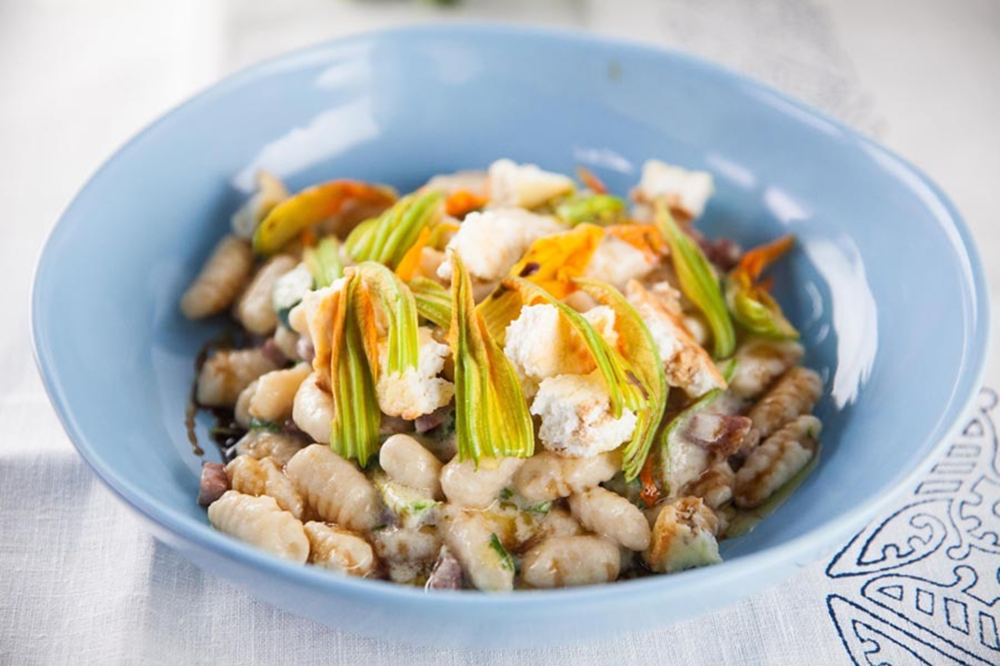

Italian Potato Gnocchi with Butter & Sage
Description:
This classic Italian dish, made with tender gnocchi and a rich butter and sage sauce, is the perfect comfort food, inspired by family dinners in Portorosso.
Ingredients
- 2 large russet potatoes
- 1 cup flour
- 1 egg
- Butter
- Fresh sage leaves
Instructions
- Boil potatoes until tender, then peel and mash.
- Mix the mashed potatoes with egg and flour to form a dough.
- Roll the dough into ropes, then cut into small gnocchi pieces.
- Boil the gnocchi in salted water until they float to the top.
- In a pan, brown butter and crisp fresh sage leaves. Toss the gnocchi in the butter and sage.